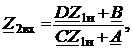

Четырёхполюсник обычно является передаточным звеном между источником энергии (сигнала) и нагрузкой, например, с помощью кабеля подключают телевизор к общей приёмной антенне.
Рассмотрим прямую и обратную передачи сигнала в несимметричном ЧП. Обозначим через Z1вх входное сопротивление ЧП со стороны выводов
1 и 1', когда к выводам 2 и 2' присоединена нагрузка Z2н, и через Z2вх − входное сопротивление ЧП со стороны выводов 2 и 2', когда к выводам 1 и 1' присоединена нагрузка Z1н, и запишем уравнения в А-форме:
• при прямой передаче
• при обратной передаче
 .
.
.Разделив первые уравнения на вторые, получим:
так как (2.128)
 так как (2.129)
Если известны параметры ХХ (Z1х и Z2х) и КЗ (Z1к и Z2к), то входные сопротивления ЧП
удобно выразить через эти параметры, учитывая, что т.е.
. (2.130)
Зависимости (2.128)...(2.130) связывают сопротивления на выводах ЧП и иллюстрируют свойство ЧП преобразовывать сопротивления. При этом передаточное сопротивление
а напряжение U2 на выходе и ток I1 на входе ЧП зависят не только от частоты сигнала, но и от характера нагрузки:
(2.131)
Для ненагруженного ЧП: